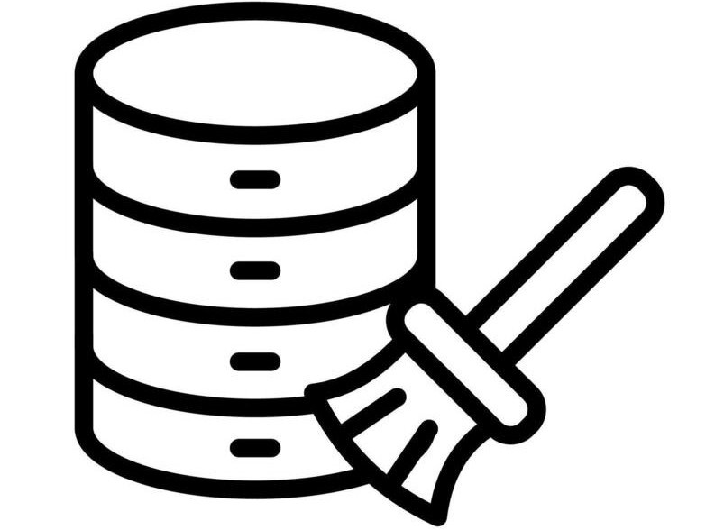
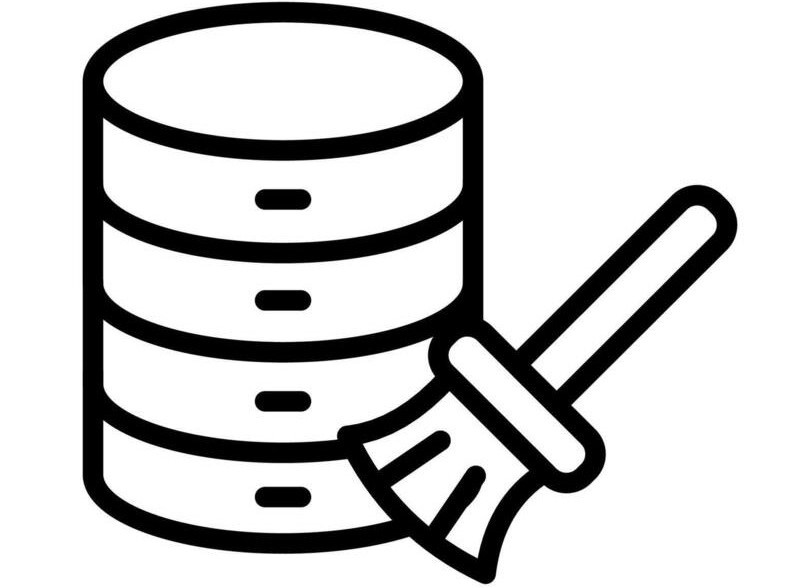

December 12, 2024
In this project, I utilized advanced queries in MYSQL that extracted relevant sales data and was able to get useful insights that answered some business questions, from a "NorthWind database" I requested for, from Deborah Daniel.
 

In this project, I cleaned a housing dataset, I got from Kaggle using Data Definition(DDL) and Data Manipulation Languages(DML) in SQL Server

This consists of some of the visualizations i've made on Tableau, including Covenant Univeristy's 19th set senate list.

In this project, I used DAX queries to craft advanced measures, enabling in-depth analysis and insights. I then created dynamic visualizations from those insights.
In this project, I leveraged my knowledge of python libraires such as BeautifulSoup, Requests and Pandas to scrape data from a website and store the data as a file.